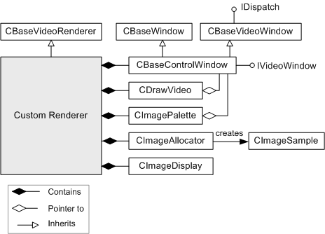

description: The CDrawImage class is a helper class that manages drawing for a video renderer filter. ms.assetid: 7a6b3726-dbf5-4b60-8cf1-42034a321293 title: CDrawImage class (Winutil.h) ms.topic: reference ms.date: 4/26/2023 topic_type:
[The feature associated with this page, DirectShow, is a legacy feature. It has been superseded by MediaPlayer, IMFMediaEngine, and Audio/Video Capture in Media Foundation. Those features have been optimized for Windows 10 and Windows 11. Microsoft strongly recommends that new code use MediaPlayer, IMFMediaEngine and Audio/Video Capture in Media Foundation instead of DirectShow, when possible. Microsoft suggests that existing code that uses the legacy APIs be rewritten to use the new APIs if possible.]
The CDrawImage class is a helper class that manages drawing for a video renderer filter. All drawing operations are performed using GDI. This class does not provide any support for rendering with DirectDraw. The CDrawImage class requires that the owning filter also use the CBaseWindow class, which manages the video window. The CDrawImage constructor takes a pointer to the CBaseWindow object.
The following diagram shows the preferred way to use this class in a custom video renderer filter.

To use this class, do the following:
The filter shown in the previous diagram uses a custom allocator class, CImageAllocator. This allocator creates DIBs in shared memory, using the GDI CreateDIBSection function. The samples created by the allocator are CImageSample objects.
If the filter owns the allocator for the connection, then the media samples are guaranteed to be CImageSample objects. In that case, the CDrawImage object can optimize drawing by using BitBlt or StretchBlt. Otherwise, it must use the slower SetDIBitsToDevice or StretchDIBits functions. The faster option is implemented by the CDrawImage::FastRender method, the slower option by the CDrawImage::SlowRender method. (Despite the name, you probably won't see a large performance hit in SlowRender, especially on newer hardware.)
If the FastRender method is used for drawing and the image is palettized, then the filter needs to manage the palette, as follows:
| Protected Member Variables | Description |
|---|---|
| m_bStretch | Indicates whether the video image must be stretched to fit the destination window. |
| m_bUsingImageAllocator | Indicates whether the allocator for the pin connection is a CImageAllocator object. |
| m_EndSample | Specifies the stop time of the most recent sample. |
| m_hdc | Handle to the device context of the owning window. |
| m_MemoryDC | Handle to the memory device context of the owning window. |
| m_PaletteVersion | Used to track when the palette changes. |
| m_pBaseWindow | Pointer to the owning CBaseWindow object. |
| m_pMediaType | Pointer to the current media type. |
| m_SourceRect | Specifies the source rectangle for drawing. |
| m_StartSample | Specifies the start time of the most recent sample. |
| m_TargetRect | Specifies the target rectangle for drawing. |
| Protected Methods | Description |
| DisplaySampleTimes | Draws the time stamps of a media sample on top of the video image. |
| FastRender | Draws the video image using the BitBlt or StretchBlt functions. |
| SetStretchMode | Calculates whether the video image must be stretched. |
| SlowRender | Draws the video image using the SetDIBitsToDevice or StretchDIBits functions. |
| UpdateColourTable | Updates the color table with a new palette. |
| Public Methods | Description |
| CDrawImage | Constructor method. |
| DrawImage | Draws a video frame on the video window. |
| DrawVideoImageHere | Draws an image from a media sample to a specified device context. |
| GetPaletteVersion | Retrieves the palette version. |
| GetSourceRect | Retrieves the current source rectangle. |
| GetTargetRect | Retrieves the current destination rectangle. |
| IncrementPaletteVersion | Increments the palette version. |
| NotifyAllocator | Informs the CDrawImage object whether the allocator for the connection is a CImageAllocator object. |
| NotifyEndDraw | Not supported. |
| NotifyMediaType | Notifies the object of the current media type. |
| NotifyStartDraw | Not supported. |
| ResetPaletteVersion | Resets the palette version. |
| ScaleSourceRect | Scales a specified source rectangle, if there is a difference between the native video size and the media type format. Virtual. |
| SetDrawContext | Sets the device contexts used for drawing. |
| SetSourceRect | Sets the source rectangle. |
| SetTargetRect | Sets the target rectangle. |
| UsingImageAllocator | Indicates whether the current allocator is a CImageAllocator object. |
| Requirement | Value |
|---|---|
| Header | Winutil.h (include Streams.h) |
| Library | Strmbase.lib (retail builds); Strmbasd.lib (debug builds) |